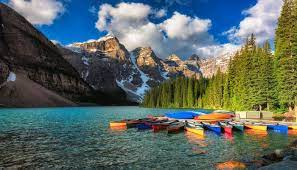
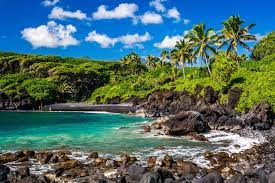

New York is not only the most famous city in the world but also, arguably, the best for tourists, thanks to its diverse culture and myriad of entertainment options. There's never a dull day in the city that doesn't sleep. New York City offers visitors endless possibilities, great diversity, and high energy. The city has always been the crème de la crème for first-rate dining, cultural activity, and unparalleled shopping. For tourists, it’s an amazing city and, at times, slightly intimidating which is why many visitors enjoy visiting by cruise ship. New York City offers so much variety that you could live here your entire life and not eat in every restaurant, see every Broadway show, hit every jazz club, or live in every neighborhood. You never run out of new things to do, dishes to eat, places to visit, or people to meet.
2. Alberta, Canada

Wide open prairies and soaring Rocky Mountains, Alberta is defined by diversity. From the Canadian Rocky Mountain Parks UNESCO World Heritage Site to the Great Plains, where both dinosaurs and buffalo roamed, the Alberta landscape invites nature-loving visitors to get outside and explore. In the cities, the booming Edmonton and Calgary both delivery their own unique cosmopolitan flare without ignoring the province’s ageless western culture. Alberta contains a large portion of the Rocky Mountains and most tourism to the province centers around visiting the beautiful parks that surround them. The province’s two main cities, Calgary and Edmonton, are Canada’s largest outside the Toronto-Montreal-Vancouver axis, though they’re much less popular as tourist destinations. The larger city, Calgary, is generally acknowledged to contain more to see and do, though Edmonton contains a few famous attractions, as well.
3. Wailea, Hawaii

Wailea offers high-end shopping and world-class dining. It attracts many annual, high profile events including the Maui Film Festival, and is a destination for whale watching during February's Whale Week. The area is known for its Hawaii Regional Cuisine offering you a chance to indulge in local favorites. Wailea is located in South Maui, about 35 minutes from Kahului Airport. Because of its unique crescent-shaped coves, it provides a sense of privacy that is uncommon for popular resort towns. The area has been developed over the past three decades and is now home to outstanding golf courses, top-rated hotels and restaurants, and stunning views of the Pacific Ocean. It is a carefree area with peaceful trails, some of the loveliest beaches on the island and acres of green parkland that makes it feel less crowded than other tourist areas. Wailea is known for its beauty, with several natural attractions that provide breathtaking views of mother nature’s handy work. There are five beaches in Wailea, each with its piece of welcoming waters. Wailea Beach is known for its swimming and snorkeling, while Ulua Beach Park is a favorite spot for joggers and stunning sunsets. If you head south on the coast, you will find Ahihi-Kinau Natural Area Reserve, a perfect spot to snorkel or take in the coastal lava field.